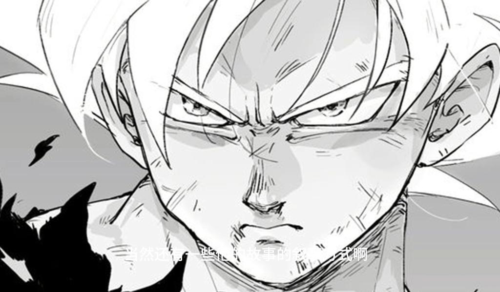
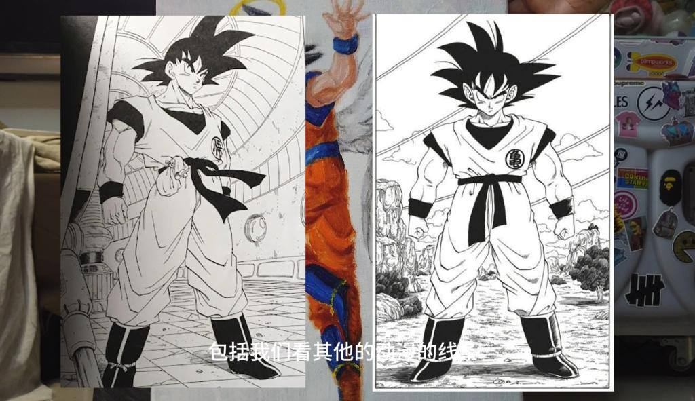
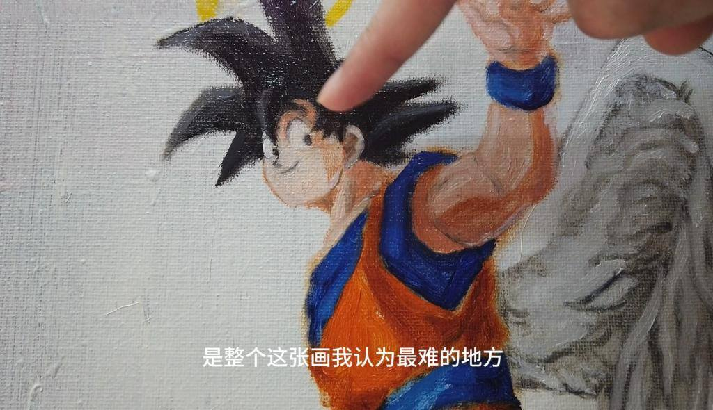
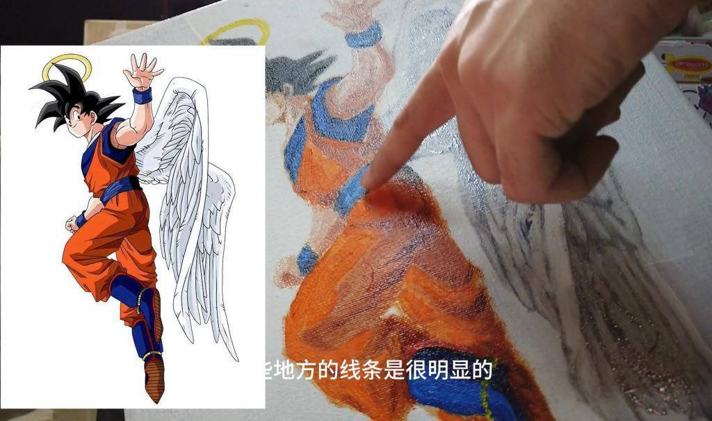

公开课
跨界探索：将动漫风格融入油画的艺术实践
我们将探索线条在绘画中的重要性，特别是在动漫创作中的应用，以及尝试将这种风格融入到油画这一传统媒介中的挑战和收获。基于对动漫大师鸟山明作品的深刻影响和个人的艺术实践，分享了从临摹到创作的过程，以及在这一过程中对材料、技法和创作意义的探索和理解。

线条在动漫创作中的力量
动漫作品，以其鲜明的线条和充满活力的色彩著称，为许多艺术家提供了无尽的灵感来源。从早年对《龙珠》等经典作品的临摹，我深刻体会到线条在塑造动漫角色和故事叙述中的核心作用。这些线条不仅仅是轮廓的描绘，它们还传达了动作的动态和情感的强度，为作品注入了生命。

油画与动漫：一次跨媒介的探索
将动漫元素融入油画创作是一次大胆的尝试。传统上，油画以其丰富的质感和深邃的色彩层次被视为表现复杂主题和自然风景的理想媒介。然而，当试图用油画来表现动漫作品时，就面临了一系列挑战。动漫作品的线条清晰、色彩鲜明的特点，与油画媒介的特性并不完全契合。在我的实践中，尽管遇到了如线条表现的硬朗感难以复制、色彩转换的平滑度不易掌握等难题，但这也促使我探索新的表现手法和材料使用，如板绘和彩铅，以期更好地捕捉动漫的精髓。

对创作意义的个人理解
在创作过程中，我深刻体会到艺术作品的意义并非始终一目了然。例如，虽然将一张练习作品视为对动漫风格的探索，但观众可能会从中读取到更深层的意义或情感。这种主观性是艺术的魅力所在，也是每位艺术家在创作时必须考虑的重要方面。我的作品，虽然深受动漫风格的影响，但也努力融入个人的观察和情感，使之不仅仅是风格的模仿，而是对经典的致敬和个人经验的反映。

结语
通过跨媒介的探索和对创作意义的反思，我更加坚信艺术是一个不断学习和探索的过程。无论是油画还是动漫，每种媒介和风格都有其独特的表现力和局限性。作为艺术家，我们的任务是不断尝试，通过不同的技术和材料，找到最能表达我们创意的方式。感谢鸟山明以及所有动漫创作对我的启发，希望未来能继续在艺术的道路上探索新的可能性。